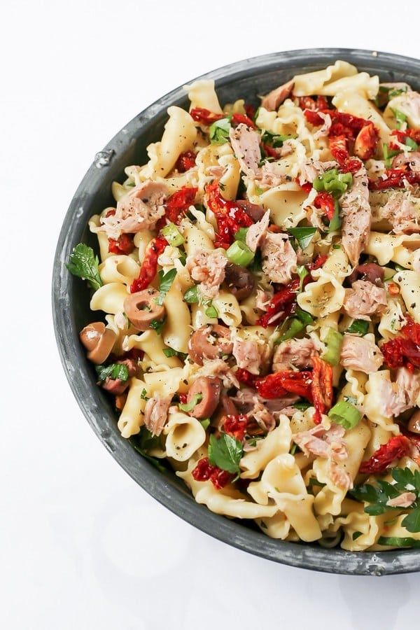

Mediterranean Tuna Pasta Salad

Description
This tasty and filling Tuna Pasta Salad comes to us courtesy of our October Pasta Spotlight, Brynn McDowell, RDN. This recipe boasts many of the health perks commonly found in the Mediterranean Diet, plus is packed with flavor, and can be ready in a flash!
Ingredients
- 1/2 box pasta (any short noodle- i.e.: penne, rigatoni, bowties, etc)
- 1 jars canned tuna
- 1/8 cup sun-dried tomatoes
- 1 diced scallions green and white parts
- 1/8 cup chopped fresh parsley
- 1 tbsp capers
- 1/8 cup sliced olives
- 1/2 clove of minced garlic
- 1/2 tsp dried oregano
- 1/8 cup olive oil
- salt and pepper to taste
Steps
- Prepare the pasta according to the instructions on the package, prepare slightly al dente so that it holds up in the pasta salad. Drain and set aside to cool.
- In a large bowl, combine tuna, sun dried tomatoes, scallions, parsley, capers, and olives. Mix well.
- Add drained, cooled pasta to bowl and stir to combine.
- In a small bowl/jar, whisk together lemon zest, lemon juice, garlic, oregano and olive oil. Taste and season with salt and pepper as needed.
- In a small bowl/jar, whisk together lemon zest, lemon juice, garlic, oregano and olive oil. Taste and season with salt and pepper as needed.
Back to top
Homepage